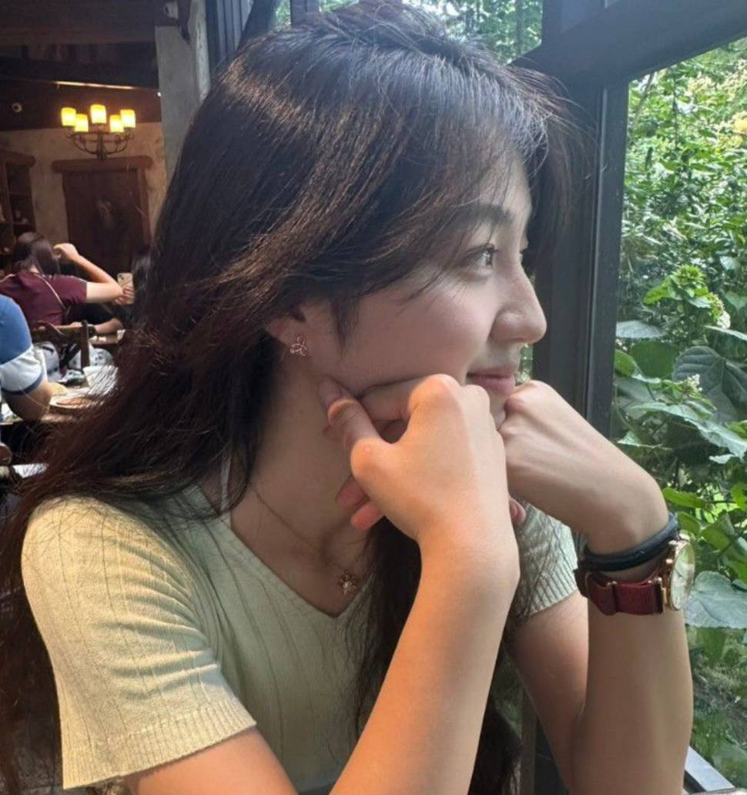
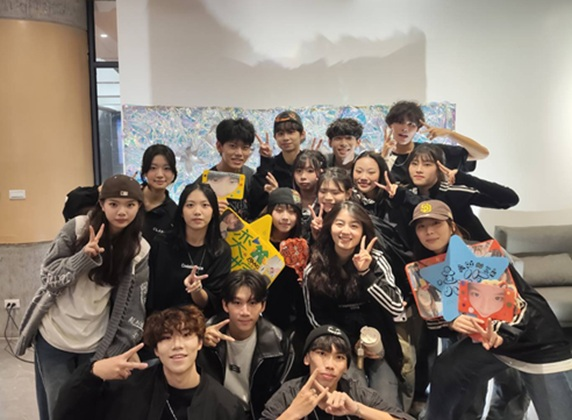
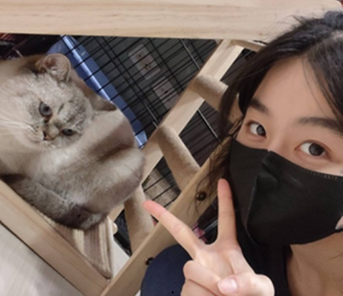
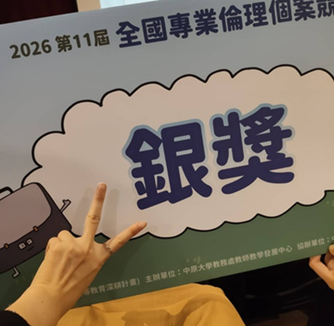
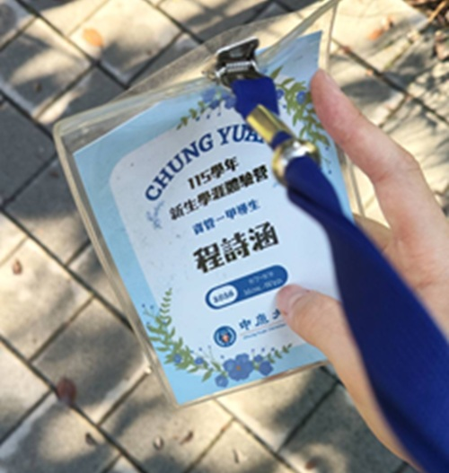

程詩涵
中原大學 資訊管理學系
CYCU
Information Management
Grade:Sophomore
#Slogn:太陽下山有月光 月亮落下有朝陽

中原大學 資訊管理學系
CYCU
Information Management
Grade:Sophomore
#Slogn:太陽下山有月光 月亮落下有朝陽
生日:2007/4/17
星座:牡羊座
人稱:台灣孫千
喜歡的愛豆:TNT
個性:連我都猜不透，跟變色龍一樣，沒一個準確說詞
興趣:打羽球、學習、泡咖啡、研究室內設計、深度思考、了解香氛香水、品酒品茶、了解花藝、打扮
專長:漫想、自我剖析、感受各種五官訊息、報告

在拉開大學生活的序幕時，對一切的事物充滿著熱情，人人都說的大學必修四學分，其中之一 就是社團!而熱舞社也是我距國小以來第二次有機會接觸。因此在社博時也堅定的選擇了 熱舞的H組。雖然因為重心上還是課業為主體驗為輔而無法持續，但這份回億仍然會繼續伴我成長， 並成為後續理想生活的優質興趣培養項目!

拜管理學之賜，讓我體驗了從未有的一日喵星人志工。在這項服務學習的競賽中， 不但需要身體力行，也考驗團隊在執行任務上的配合和各種溝通協調，同時也要學習報告的台風 跟穩定度，很開心能在這次的小組比賽中獲得第二名，也讓我了解到貓隻的照顧跟相關領養方式，這樣實踐出來的服務 會是有溫度有感受的一個美好回憶~^^

這個比賽應該是迄今為止最令我印象深刻的，從當主糾一起參加到決賽當天簡直是不可置性， 這一路來不簡單，也因為重視而學到了非常多課本以外的知識。不論是題目的選擇、資料的蒐集、小論文的製作、跟指導 老師的討論到小組內部不斷的溝通分配，大家都很齊心協力地一起完成了!而最後我當主講之一，站在台上面對評審跟觀眾時 緊張溢於言表，雖然中間有稍微卡詞，但對我來說這已經是一大進步跟成長了!也希望日後能參加更大型的比賽；見更大的世面；看更廣的風景

報名作為導生的契機不免俗地說是因為打工賺錢的誘因，況且又是在相對安全的懷境下， 因此就有了這個經歷~作為導生，我回想著過去我們這屆的導生帶領的方式，才發現其中也有挑戰， 例如突發事件時要隨機應變，而當需要支援時，也要獨自帶領一百多人。面對這麼多陌生面孔，作為學姊的我 不免也有些害怕。但，或許這就是這經歷要交給我的成長吧!我不但訓練了膽量，學著當一個有責任心的領導者， 也認識了很多學弟妹，重點是能試著解決不同問題真的超酷的!